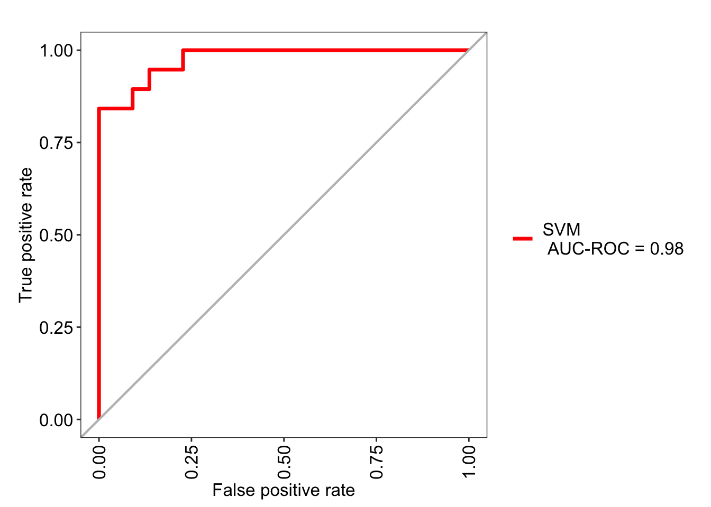
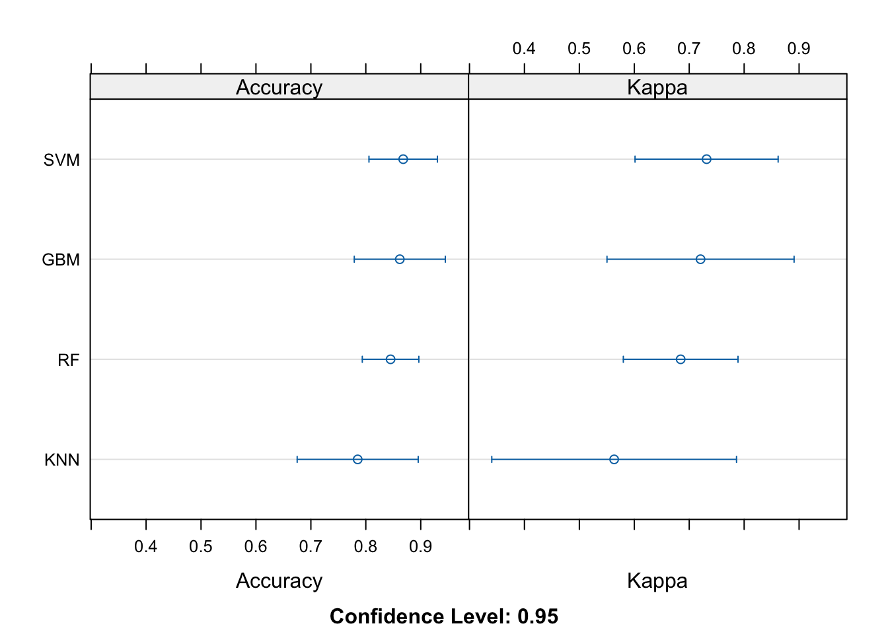

Chapter 6 Everyday ML: Classification
In the preceding chapters, I reviewed the fundamentals of wrangling data as well as running some exploratory data analysis to get a feel for the data at hand. In data science projects, it is often typical to frame problems in context of a model - how does a variable y behave according to some other variable x? For example, how does the pricing of a residential property behave according to the square footage? Is the relationship linear? Are there confounding variables that affect this relationship we have not accounted for?
In the simplest sense, fitting a linear model using ordinary least squares using lm() in R provide us with two parameters: the coefficient and the intercept. We can use these parameters to predict the housing price of a property based on the input feature - or features most likely - of that particular instance. This is the fundamental concept at the core of supervised learning. This example is a type of a regression as the target variable (i.e., the housing price) is a continuous variable. However, if the variable we were trying to predict is categorical (e.g., bins based on the bracket of housing price) the task would be classification.
The digression into concepts in ML and the details into each algorithm is beyond the scope of this book, but more details around specific topics are available on my blog as well as documentation for popular ML packages such as Python’s Scikit-Learn.
In R, the workhorse of supervised learning models, whether it’s classification or regression, is the caret package. Recently, the development of the package tidymodels has made implementation of ML much easier, with incorporation of packages such as parsnip. Tidymodels is especially convenient as it aims to remain consistent with the syntax from the tidyverse suite of data science packages. In this chapter however, I will use caret as I believe it is still very commonly used today and retains a backlog of useful related links on public forums such as Stack Overflow.
6.1 Model training and predictions
For the first exercise I will use a dataset from Kaggle here which I also uploaded onto my GitHub for reference:
url <- 'https://raw.githubusercontent.com/snowoflondon/everyday-r/main/datasets/Class_Winequality.csv'
df <- read_delim(url, delim = ';')## Rows: 4898 Columns: 12
## ── Column specification ────────────────────────────────────────────
## Delimiter: ";"
## dbl (12): fixed acidity, volatile acidity, citric acid, residual...
##
## ℹ Use `spec()` to retrieve the full column specification for this data.
## ℹ Specify the column types or set `show_col_types = FALSE` to quiet this message.## # A tibble: 6 × 12
## `fixed acidity` `volatile acidity` `citric acid` `residual sugar`
## <dbl> <dbl> <dbl> <dbl>
## 1 7 0.27 0.36 20.7
## 2 6.3 0.3 0.34 1.6
## 3 8.1 0.28 0.4 6.9
## 4 7.2 0.23 0.32 8.5
## 5 7.2 0.23 0.32 8.5
## 6 8.1 0.28 0.4 6.9
## # ℹ 8 more variables: chlorides <dbl>, `free sulfur dioxide` <dbl>,
## # `total sulfur dioxide` <dbl>, density <dbl>, pH <dbl>,
## # sulphates <dbl>, alcohol <dbl>, quality <dbl>This dataset has 11 features and a target label column called quality. Firstly, I convert the quality column into factors to reiterate the fact that we are working with a categorical column with defined levels.
A glimpse into the 11 features shows us that the values are heterogenous in scale:
## fixed acidity volatile acidity citric acid
## Min. : 3.800 Min. :0.0800 Min. :0.0000
## 1st Qu.: 6.300 1st Qu.:0.2100 1st Qu.:0.2700
## Median : 6.800 Median :0.2600 Median :0.3200
## Mean : 6.855 Mean :0.2782 Mean :0.3342
## 3rd Qu.: 7.300 3rd Qu.:0.3200 3rd Qu.:0.3900
## Max. :14.200 Max. :1.1000 Max. :1.6600
## residual sugar chlorides free sulfur dioxide
## Min. : 0.600 Min. :0.00900 Min. : 2.00
## 1st Qu.: 1.700 1st Qu.:0.03600 1st Qu.: 23.00
## Median : 5.200 Median :0.04300 Median : 34.00
## Mean : 6.391 Mean :0.04577 Mean : 35.31
## 3rd Qu.: 9.900 3rd Qu.:0.05000 3rd Qu.: 46.00
## Max. :65.800 Max. :0.34600 Max. :289.00
## total sulfur dioxide density pH
## Min. : 9.0 Min. :0.9871 Min. :2.720
## 1st Qu.:108.0 1st Qu.:0.9917 1st Qu.:3.090
## Median :134.0 Median :0.9937 Median :3.180
## Mean :138.4 Mean :0.9940 Mean :3.188
## 3rd Qu.:167.0 3rd Qu.:0.9961 3rd Qu.:3.280
## Max. :440.0 Max. :1.0390 Max. :3.820
## sulphates alcohol
## Min. :0.2200 Min. : 8.00
## 1st Qu.:0.4100 1st Qu.: 9.50
## Median :0.4700 Median :10.40
## Mean :0.4898 Mean :10.51
## 3rd Qu.:0.5500 3rd Qu.:11.40
## Max. :1.0800 Max. :14.20For a quick exploratory analysis, take a look at the distribution of the features and their scales (i.e., y-axis). Typically in ML tasks, the scales need to be preprocessed prior to model training. This isn’t necessarily the case in models like the random forest, for example, but it is good practice regardless. I will circle back to this in a bit.
library(RColorBrewer)
dfm <- df %>% pivot_longer(-quality, names_to = 'feature',
values_to = 'values')
dfm %>% ggplot(aes(x = quality, y = values)) +
geom_boxplot(aes(fill = quality), alpha = .6) +
facet_wrap(~ feature, scales = 'free') + theme_bw() +
theme(legend.position = 'none') +
scale_fill_brewer(palette = 'Set1')
Before doing any kind of pre-processing or normalization, it is imperative to split the data into training and testing to prevent information leak. The createDataPartition() function accepts the p = argument which defines the split fraction. Here I use 80/20 split.
set.seed(42)
df <- df %>% mutate(quality = paste0('Group_', quality)) %>%
mutate(quality = factor(quality))
idx <- createDataPartition(y = df$quality, p = .8,
list = FALSE, times = 1)
df_train <- df[idx,]
df_test <- df[-idx,]The createDataPartition() outputs an array of indices which can be used to split the original data.
Going back to the talk of scaling and pre-processing the data: a common procedure is to center and scale, that is - subtract the mean and divide by the standard deviation. If you’re familiar with scikit-learn in Python, this is analogous to running StandardScaler().
## Created from 3920 samples and 12 variables
##
## Pre-processing:
## - centered (11)
## - ignored (1)
## - scaled (11)Evidently, the preProcess() function recognized the column containing the target labels and ignored it for pre-processing.
Pre-processing is done on the training data and the learned object is applied to both the training and testing data:
Revisiting the features now shows the effect of the preprocessing step:
## fixed acidity volatile acidity citric acid
## Min. :-3.63462 Min. :-1.9812 Min. :-2.7409
## 1st Qu.:-0.66724 1st Qu.:-0.6815 1st Qu.:-0.5247
## Median :-0.07376 Median :-0.1816 Median :-0.1143
## Mean : 0.00000 Mean : 0.0000 Mean : 0.0000
## 3rd Qu.: 0.63841 3rd Qu.: 0.4182 3rd Qu.: 0.4602
## Max. : 8.70968 Max. : 7.2663 Max. :10.8844
## residual sugar chlorides free sulfur dioxide
## Min. :-1.1408 Min. :-1.6600 Min. :-1.89691
## 1st Qu.:-0.9250 1st Qu.:-0.4457 1st Qu.:-0.72325
## Median :-0.2384 Median :-0.1309 Median :-0.07773
## Mean : 0.0000 Mean : 0.0000 Mean : 0.00000
## 3rd Qu.: 0.6835 3rd Qu.: 0.1840 3rd Qu.: 0.62647
## Max. :11.6490 Max. :13.4966 Max. :14.88647
## total sulfur dioxide density pH
## Min. :-3.0417 Min. :-2.2943 Min. :-2.99893
## 1st Qu.:-0.6983 1st Qu.:-0.7665 1st Qu.:-0.65873
## Median :-0.1065 Median :-0.1122 Median :-0.05697
## Mean : 0.0000 Mean : 0.0000 Mean : 0.00000
## 3rd Qu.: 0.6746 3rd Qu.: 0.7082 3rd Qu.: 0.61166
## Max. : 7.1367 Max. :14.9270 Max. : 4.22224
## sulphates alcohol
## Min. :-2.4096 Min. :-2.05259
## 1st Qu.:-0.7084 1st Qu.:-0.83024
## Median :-0.1711 Median :-0.09683
## Mean : 0.0000 Mean : 0.00000
## 3rd Qu.: 0.5452 3rd Qu.: 0.71807
## Max. : 4.4850 Max. : 2.99978The scales have been normalized, as evident here:
df_train %>% pivot_longer(-quality, names_to = 'feature',
values_to = 'values') %>%
ggplot(aes(x = quality, y = values)) +
geom_boxplot(aes(fill = quality), alpha = .6) +
facet_wrap(~ feature, scales = 'free') + theme_bw() +
theme(legend.position = 'none') +
scale_fill_brewer(palette = 'Set1')Once we’re ready to train the model, an important function is trainControl(). Here, typically we define the sampling method for the model training. I am using method = cv with number = 5 for k-fold cross-validation with 5 folds. Alternatively, I could use method = repeatedcv with number = 5 and repeats = 5 for repeated cross-validation with 5 iterations, but for this exercise I will settle with the simple 5-fold cross validation.
tr <- trainControl(method = 'cv',
number = 5,
classProbs = TRUE)
model <- train(quality ~ ., data = df_train,
method = 'ranger', importance = 'impurity',
trControl = tr)Above, I defined method = ranger within train(), which is a wrapper for training a random forest model. For all available methods for train(), see caret’s documentation here. The importance = 'impurity' asks the model to use the Gini impurity method to rank variable importance. This will be useful later.
Calling the model object summarizes the model’s performance on the validation set (i.e., hold-out sets during k-fold cross validation).
## Random Forest
##
## 3920 samples
## 11 predictor
## 7 classes: 'Group_3', 'Group_4', 'Group_5', 'Group_6', 'Group_7', 'Group_8', 'Group_9'
##
## No pre-processing
## Resampling: Cross-Validated (5 fold)
## Summary of sample sizes: 3136, 3135, 3136, 3137, 3136
## Resampling results across tuning parameters:
##
## mtry splitrule Accuracy Kappa
## 2 gini 0.6673350 0.4788991
## 2 extratrees 0.6691211 0.4770672
## 6 gini 0.6576428 0.4669154
## 6 extratrees 0.6668264 0.4778833
## 11 gini 0.6558499 0.4648450
## 11 extratrees 0.6647859 0.4756944
##
## Tuning parameter 'min.node.size' was held constant at a value of 1
## Accuracy was used to select the optimal model using the
## largest value.
## The final values used for the model were mtry = 2, splitrule
## = extratrees and min.node.size = 1.Various hyperparametes were tested and the combination with the highest validation accuracy was chosen:
## mtry splitrule min.node.size
## 2 2 extratrees 1The performance on the resamples during the cross validation process can be found here:
## Accuracy Kappa Resample
## 1 0.6530612 0.4487323 Fold1
## 2 0.6811224 0.4989916 Fold3
## 3 0.6942675 0.5131632 Fold2
## 4 0.6683673 0.4796363 Fold5
## 5 0.6487867 0.4448126 Fold4The testing dataset has not been touched at all during model training. For model evaluation, above model is tested on this hold-out set using predict():
For a clean summary of model evaluation, use confusionMatrix():
## Confusion Matrix and Statistics
##
## Reference
## Prediction Group_3 Group_4 Group_5 Group_6 Group_7 Group_8 Group_9
## Group_3 0 0 0 0 0 0 0
## Group_4 0 7 1 0 0 0 0
## Group_5 3 14 217 55 3 1 0
## Group_6 1 11 71 360 82 15 1
## Group_7 0 0 2 23 90 7 0
## Group_8 0 0 0 1 1 12 0
## Group_9 0 0 0 0 0 0 0
##
## Overall Statistics
##
## Accuracy : 0.7014
## 95% CI : (0.6717, 0.73)
## No Information Rate : 0.4489
## P-Value [Acc > NIR] : < 2.2e-16
##
## Kappa : 0.533
##
## Mcnemar's Test P-Value : NA
##
## Statistics by Class:
##
## Class: Group_3 Class: Group_4 Class: Group_5
## Precision NA 0.875000 0.7406
## Recall 0.00000 0.218750 0.7457
## F1 NA 0.350000 0.7432
## Prevalence 0.00409 0.032720 0.2975
## Detection Rate 0.00000 0.007157 0.2219
## Detection Prevalence 0.00000 0.008180 0.2996
## Balanced Accuracy 0.50000 0.608846 0.8175
## Class: Group_6 Class: Group_7 Class: Group_8
## Precision 0.6654 0.73770 0.85714
## Recall 0.8200 0.51136 0.34286
## F1 0.7347 0.60403 0.48980
## Prevalence 0.4489 0.17996 0.03579
## Detection Rate 0.3681 0.09202 0.01227
## Detection Prevalence 0.5532 0.12474 0.01431
## Balanced Accuracy 0.7421 0.73573 0.67037
## Class: Group_9
## Precision NA
## Recall 0.000000
## F1 NA
## Prevalence 0.001022
## Detection Rate 0.000000
## Detection Prevalence 0.000000
## Balanced Accuracy 0.500000Certain models such as the random forest have built-in feature importance. During model training, I defined importance = 'impurity', which means that the feature importance is calculated using the mean decrease in impurity after permutation of a given feature. Accessing this information is useful when we want to know which variables have the greatest influence on model performance and conversely, which ones have the least.
## Overall
## `fixed acidity` 0.000000
## `volatile acidity` 35.165026
## `citric acid` 8.761852
## `residual sugar` 11.579565
## chlorides 4.090038
## `free sulfur dioxide` 14.832990
## `total sulfur dioxide` 12.411664
## density 38.947736
## pH 7.484357
## sulphates 2.801255
## alcohol 100.000000The variable importance score is automatically scaled so that the highest score is set to 100. This can be turned off using scale = FALSE within varImp().
A quick visualization of variable importance is useful:
df_imp <- varImp(model)$importance %>%
rownames_to_column(var = 'Var') %>%
as_tibble() %>% arrange(desc(Overall))
ggplot(df_imp, aes(x = reorder(Var, Overall), y = Overall)) +
geom_point(stat = 'identity', color = 'red') +
geom_segment(aes(x = reorder(Var, Overall),
xend = reorder(Var, Overall),
y = 0,
yend = Overall)) +
theme_classic() + coord_flip() + xlab('') + ylab('Var. Imp.') +
theme(text = element_text(size = 14))6.2 Feature selection using univariate filters
When the dataset is considerably larger, the number of n features may grow extremely large. In these scenarios, it may be advisable to reduce the number of features to save computation time but also to reduce model complexity.
Of course, dimensionality reduction is possible, though this transforms the data and the original meaning of the features is lost. An alternative method is feature selection - selecting important features and discarding unimportant ones. This relates specifically to the concept of feature importance in the previous section.
caret offers a simple way to rank features when built-in feature importance measures are not available. This is by using univariate filters, which are essentially fitting n individual models (where n is the number of features) against the target label and ranking them based on their statistical significance.
anoveScores() is used for classification models and fits an ANOVA for each feature against the label. The null hypothesis here assumes the mean values for each feature is equal for all labels. gamScores() is used for regression models and uses a generalized additive model to look for functional relationships between the features and the label. In both cases, each feature in the predictor set is passed individually.
For this part I will use the Sonar dataset from mlbench.
## # A tibble: 208 × 61
## V1 V2 V3 V4 V5 V6 V7 V8 V9
## <dbl> <dbl> <dbl> <dbl> <dbl> <dbl> <dbl> <dbl> <dbl>
## 1 0.02 0.0371 0.0428 0.0207 0.0954 0.0986 0.154 0.160 0.311
## 2 0.0453 0.0523 0.0843 0.0689 0.118 0.258 0.216 0.348 0.334
## 3 0.0262 0.0582 0.110 0.108 0.0974 0.228 0.243 0.377 0.560
## 4 0.01 0.0171 0.0623 0.0205 0.0205 0.0368 0.110 0.128 0.0598
## 5 0.0762 0.0666 0.0481 0.0394 0.059 0.0649 0.121 0.247 0.356
## 6 0.0286 0.0453 0.0277 0.0174 0.0384 0.099 0.120 0.183 0.210
## 7 0.0317 0.0956 0.132 0.141 0.167 0.171 0.0731 0.140 0.208
## 8 0.0519 0.0548 0.0842 0.0319 0.116 0.0922 0.103 0.0613 0.146
## 9 0.0223 0.0375 0.0484 0.0475 0.0647 0.0591 0.0753 0.0098 0.0684
## 10 0.0164 0.0173 0.0347 0.007 0.0187 0.0671 0.106 0.0697 0.0962
## # ℹ 198 more rows
## # ℹ 52 more variables: V10 <dbl>, V11 <dbl>, V12 <dbl>, V13 <dbl>,
## # V14 <dbl>, V15 <dbl>, V16 <dbl>, V17 <dbl>, V18 <dbl>,
## # V19 <dbl>, V20 <dbl>, V21 <dbl>, V22 <dbl>, V23 <dbl>,
## # V24 <dbl>, V25 <dbl>, V26 <dbl>, V27 <dbl>, V28 <dbl>,
## # V29 <dbl>, V30 <dbl>, V31 <dbl>, V32 <dbl>, V33 <dbl>,
## # V34 <dbl>, V35 <dbl>, V36 <dbl>, V37 <dbl>, V38 <dbl>, …The target labels in Sonar has two classes:
## Factor w/ 2 levels "M","R": 2 2 2 2 2 2 2 2 2 2 ...Since this is a classification task, I will use anovaScores() to output a score for each feature.
fit_anova <- function(x, y) {
anova_res <- apply(x, 2, function(f) {anovaScores(f, y)})
return(anova_res)
}
aov_res <- fit_anova(x = select(Sonar, -Class),
y = Sonar$Class)
aov_res <- as.data.frame(aov_res)
head(aov_res)## aov_res
## V1 0.0000719490
## V2 0.0007779402
## V3 0.0054167746
## V4 0.0002607819
## V5 0.0012544689
## V6 0.0567376774The output for each feature is the p-value for the whole model F-test. These can be ranked to find the features with the greatest degree of relationship with the target labels:
aov_res <- aov_res %>% rownames_to_column(var = 'Var') %>%
as_tibble() %>% rename(pVal = aov_res) %>% arrange(aov_res)
aov_res## # A tibble: 60 × 2
## Var pVal
## <chr> <dbl>
## 1 V11 6.59e-11
## 2 V12 4.64e- 9
## 3 V49 1.96e- 7
## 4 V10 4.60e- 7
## 5 V45 5.30e- 7
## 6 V48 1.19e- 6
## 7 V9 2.20e- 6
## 8 V13 4.22e- 6
## 9 V46 7.16e- 6
## 10 V47 9.49e- 6
## # ℹ 50 more rows6.3 Feature selection using recursive feature elimination
An alternative method for feature selection is recursive feature elimination (RFE). RFE is a wrapper method that uses another model to rank features based on variable importance. This model does not have to be the same model used in the downstream model prediction task.
The feature importance ranking method depends which model the RFE wrapper uses. Tree models such as the random forest, as previous mentioned, can use impurity scores or mean accuracy decrease to calculate this.
The rfeControl() function specifies the RFE model as well as the resampling method. Then rfe() runs the algorithm to identify important features as well as the model accuracy as the RFE recursively removes the less important features and trains the model.
rfec <- rfeControl(functions = rfFuncs, method = 'cv',
number = 5)
rfeObj <- rfe(x = select(Sonar, -Class), y = Sonar$Class,
rfeControl = rfec)Calling the output shows that the top 5 most important features show overlap with the result from anovaScores() from the previous section, which is good. It also shows that keeping the original 60 features here shows the best model accuracy, which is fine. This won’t always be the case with increasing number of dimensions in the data.
##
## Recursive feature selection
##
## Outer resampling method: Cross-Validated (5 fold)
##
## Resampling performance over subset size:
##
## Variables Accuracy Kappa AccuracySD KappaSD Selected
## 4 0.7212 0.4398 0.05514 0.11064
## 8 0.7308 0.4557 0.04581 0.09426
## 16 0.7790 0.5539 0.05389 0.10782
## 60 0.8176 0.6290 0.06359 0.12886 *
##
## The top 5 variables (out of 60):
## V11, V12, V9, V10, V48The fitted model and its performance can be retrieved as such:
##
## Call:
## randomForest(x = x, y = y, importance = TRUE)
## Type of random forest: classification
## Number of trees: 500
## No. of variables tried at each split: 7
##
## OOB estimate of error rate: 15.87%
## Confusion matrix:
## M R class.error
## M 101 10 0.09009009
## R 23 74 0.23711340The ranking of the features can be retrieved here, which is useful if we were to select the first few and subset our original dataset:
## [1] "V11" "V12" "V9" "V10" "V48" "V47" "V36" "V49" "V28" "V45"
## [11] "V37" "V21" "V46" "V16" "V13" "V17" "V51" "V27" "V4" "V15"
## [21] "V20" "V18" "V52" "V5" "V44" "V23" "V1" "V31" "V43" "V26"
## [31] "V22" "V35" "V19" "V30" "V14" "V8" "V39" "V34" "V32" "V24"
## [41] "V54" "V42" "V29" "V59" "V55" "V25" "V2" "V6" "V41" "V58"
## [51] "V38" "V3" "V33" "V40" "V50" "V7" "V53" "V57" "V60" "V56"Calling ggplot() on the RFE result provides a visual look:
6.5 Hyperparameter tuning
Previously when we trained the random forest model using train(), it automatically deduced the optimal values for the model hyperparameters. Under the hood, train() ran a grid search to find these values, but we can define our own grid as well.
Hyperparameter tuning should of course be done on the training set, so I will use the Sonar dataset to arrive at the training and testing sets:
idx <- createDataPartition(y = Sonar$Class, p = .8,
list = FALSE, times = 1)
df_train <- Sonar[idx,]
df_test <- Sonar[-idx,]
preProcObj <- preProcess(df_train, method = c('center', 'scale'))
df_train <- predict(preProcObj, df_train)
df_test <- predict(preProcObj, df_test)For the random forest model, I define the possible values for the three hyperparameters as such, and then train by providing an input for tuneGrid =.
rf_grid <- expand.grid(mtry = c(2, 4, 8, 10),
splitrule = c("gini", "extratrees"),
min.node.size = c(1, 3, 5))
model_rf <- train(Class ~ ., data = df_train, method = 'ranger',
importance = 'impurity', trControl = tr,
tuneGrid = rf_grid)Calling the model then shows the model performance (with the specified resampling method) for each combination of the grid search:
## Random Forest
##
## 167 samples
## 60 predictor
## 2 classes: 'M', 'R'
##
## No pre-processing
## Resampling: Cross-Validated (5 fold)
## Summary of sample sizes: 133, 133, 134, 133, 135
## Resampling results across tuning parameters:
##
## mtry splitrule min.node.size Accuracy Kappa
## 2 gini 1 0.8151181 0.6228532
## 2 gini 3 0.8327540 0.6590288
## 2 gini 5 0.8090463 0.6096000
## 2 extratrees 1 0.8207999 0.6350424
## 2 extratrees 3 0.8211676 0.6358619
## 2 extratrees 5 0.8022504 0.5957834
## 4 gini 1 0.8329434 0.6587746
## 4 gini 3 0.8210004 0.6353605
## 4 gini 5 0.8268828 0.6467128
## 4 extratrees 1 0.8206217 0.6332840
## 4 extratrees 3 0.8325758 0.6576618
## 4 extratrees 5 0.8450646 0.6844312
## 8 gini 1 0.8208222 0.6363709
## 8 gini 3 0.8268828 0.6495138
## 8 gini 5 0.8208222 0.6357195
## 8 extratrees 1 0.8445187 0.6823220
## 8 extratrees 3 0.8388146 0.6720493
## 8 extratrees 5 0.8272282 0.6488559
## 10 gini 1 0.8329434 0.6599363
## 10 gini 3 0.8388369 0.6717421
## 10 gini 5 0.8267045 0.6480589
## 10 extratrees 1 0.8206217 0.6339633
## 10 extratrees 3 0.8441511 0.6816926
## 10 extratrees 5 0.8265040 0.6457295
##
## Accuracy was used to select the optimal model using the
## largest value.
## The final values used for the model were mtry = 4, splitrule
## = extratrees and min.node.size = 5.As before, the best set of hyperparameters can be retrieved:
## mtry splitrule min.node.size
## 12 4 extratrees 5Instead of a predefined grid search, we can do a randomized search instead. This can be done by setting search = 'random' within trainControl() first and then specifying tuneLength = in train().
Since we’ve only used random forest models so far, here I will do a similar grid search but using a support vector machine (SVM) with the radial basis function kernel instead:
tr_svm <- trainControl(method = 'cv',
number = 5,
classProbs = TRUE,
search = 'random')
model_svm <- train(Class ~ ., data = df_train,
method = 'svmRadial',
trControl = tr_svm,
tunelength = 8)Calling the model shows the best combination for C (cost) and sigma based on the model accuracy:
## Support Vector Machines with Radial Basis Function Kernel
##
## 167 samples
## 60 predictor
## 2 classes: 'M', 'R'
##
## No pre-processing
## Resampling: Cross-Validated (5 fold)
## Summary of sample sizes: 133, 133, 133, 134, 135
## Resampling results across tuning parameters:
##
## sigma C Accuracy Kappa
## 0.002678978 58.142065 0.7708445 0.5357187
## 0.024781262 563.129570 0.8680481 0.7316302
## 0.033519260 2.093291 0.8564617 0.7081256
##
## Accuracy was used to select the optimal model using the
## largest value.
## The final values used for the model were sigma = 0.02478126 and C
## = 563.1296.6.6 ROC and precision-recall curves
A nice way to visualize model evaluation is by using ROC curves, which uses metrics that were already calculated previously - precision and recall.
For this I will generate predictions for the random forest model using Sonar. Setting type = 'prob' yields probabilities for each label classification instead of the label itself:
## M R
## 1 0.5870667 0.4129333
## 2 0.6210333 0.3789667
## 3 0.4531667 0.5468333
## 4 0.2409667 0.7590333
## 5 0.6803667 0.3196333
## 6 0.1867333 0.8132667The package MLeval can be used to generate ROC curves as such; here we achieve the ROC area under the curve of 0.96.
library(MLeval)
roc_rf <- evalm(data.frame(pred, df_test$Class, Group = 'RF'),
showplots = FALSE, silent = TRUE)
roc_rf$roc
Similarly, a precision-recall curve can also be visualized. This curve shows the tradeoff between the two metrics for each threshold.

The values can be retrieved here:
## $RF
## Score CI
## SENS 0.842 0.62-0.94
## SPEC 0.909 0.72-0.97
## MCC 0.755 <NA>
## Informedness 0.751 <NA>
## PREC 0.889 0.67-0.97
## NPV 0.870 0.68-0.95
## FPR 0.091 <NA>
## F1 0.865 <NA>
## TP 16.000 <NA>
## FP 2.000 <NA>
## TN 20.000 <NA>
## FN 3.000 <NA>
## AUC-ROC 0.930 0.84-1.02
## AUC-PR 0.880 <NA>
## AUC-PRG 0.610 <NA>For completeness I will make these figures for the SVM model as well:
roc_svm <- evalm(data.frame(pred2, df_test$Class, Group = 'SVM'),
showplots = FALSE, silent = TRUE)
roc_svm$roc

6.7 Model comparisons
caret provides an elegant way to compare the performance of multiple models for model selection. We have two models trained on Sonar dataset already, so I will train two more.
Here I am using a gradient boosted machine (gbm) and a k-nearest neighbors (knn).
# model_rf
# model_svm
model_gbm <- train(Class ~., data = df_train,
method = 'gbm', trControl = tr,
verbose = FALSE)
model_knn <- train(Class ~ ., data = df_train,
method = 'knn', trControl = tr)## Stochastic Gradient Boosting
##
## 167 samples
## 60 predictor
## 2 classes: 'M', 'R'
##
## No pre-processing
## Resampling: Cross-Validated (5 fold)
## Summary of sample sizes: 134, 133, 134, 133, 134
## Resampling results across tuning parameters:
##
## interaction.depth n.trees Accuracy Kappa
## 1 50 0.8204991 0.6360105
## 1 100 0.8557932 0.7079348
## 1 150 0.8438503 0.6844607
## 2 50 0.8074866 0.6089405
## 2 100 0.8436720 0.6838739
## 2 150 0.8495544 0.6952242
## 3 50 0.8440285 0.6837620
## 3 100 0.8436720 0.6844288
## 3 150 0.8618538 0.7206228
##
## Tuning parameter 'shrinkage' was held constant at a value of
## 0.1
## Tuning parameter 'n.minobsinnode' was held constant at a
## value of 10
## Accuracy was used to select the optimal model using the
## largest value.
## The final values used for the model were n.trees =
## 150, interaction.depth = 3, shrinkage = 0.1 and n.minobsinnode
## = 10.## k-Nearest Neighbors
##
## 167 samples
## 60 predictor
## 2 classes: 'M', 'R'
##
## No pre-processing
## Resampling: Cross-Validated (5 fold)
## Summary of sample sizes: 133, 133, 134, 134, 134
## Resampling results across tuning parameters:
##
## k Accuracy Kappa
## 5 0.7852050 0.5633587
## 7 0.7672014 0.5278251
## 9 0.7433155 0.4775343
##
## Accuracy was used to select the optimal model using the
## largest value.
## The final value used for the model was k = 5.Both accuracy and kappa are then used to compare the model performance across the four models:
comps <- resamples(
list(RF = model_rf, SVM = model_svm, GBM = model_gbm,
KNN = model_knn)
)
summary(comps)##
## Call:
## summary.resamples(object = comps)
##
## Models: RF, SVM, GBM, KNN
## Number of resamples: 5
##
## Accuracy
## Min. 1st Qu. Median Mean 3rd Qu. Max.
## RF 0.7941176 0.8235294 0.8484848 0.8450646 0.8529412 0.9062500
## SVM 0.8181818 0.8235294 0.8750000 0.8680481 0.8823529 0.9411765
## GBM 0.7575758 0.8529412 0.8787879 0.8618538 0.8787879 0.9411765
## KNN 0.7058824 0.7272727 0.7352941 0.7852050 0.8484848 0.9090909
## NA's
## RF 0
## SVM 0
## GBM 0
## KNN 0
##
## Kappa
## Min. 1st Qu. Median Mean 3rd Qu. Max.
## RF 0.5853659 0.6382979 0.6857143 0.6844312 0.7017544 0.8110236
## SVM 0.6250000 0.6382979 0.7490196 0.7316302 0.7638889 0.8819444
## GBM 0.5056180 0.7017544 0.7555556 0.7206228 0.7582418 0.8819444
## KNN 0.4055944 0.4469274 0.4593640 0.5633587 0.6892655 0.8156425
## NA's
## RF 0
## SVM 0
## GBM 0
## KNN 0And finally, a quick visualization at the model performance comparisons: